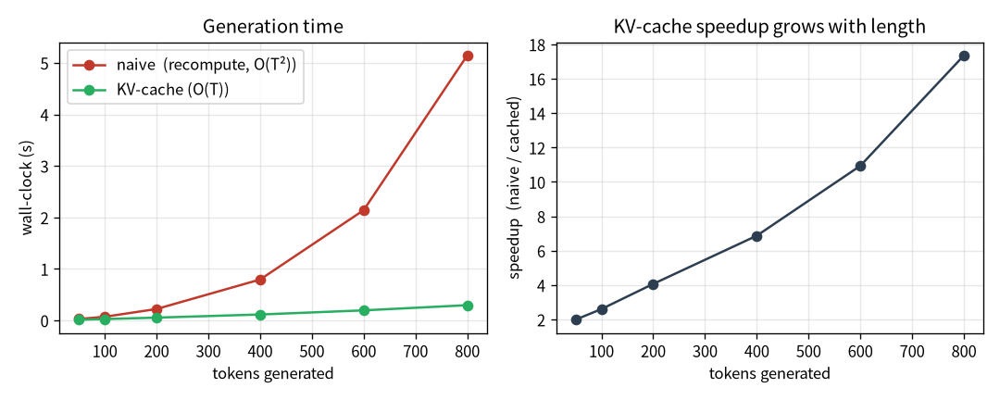

flowchart LR A["01 GPT"]-->B["02 零件"]-->C["03 效率"]-->D["04 資料"]-->E["05 評估"]-->F["06 服務"]-->G["07 治理"]-->H["08 漂移"] E -.後訓練.-> I["09 對齊"] classDef here fill:#c0392b,color:#fff,stroke:#7b241c,stroke-width:2px; class C here
3 跑多快：FlashAttention、KV-cache、取樣
一句話：效率技巧能省記憶體、加速生成——但「省」不等於「一定更快」。這一章有一個我親手量到、 跟直覺相反的反例。
第 2 章的零件多半在改「準」或改架構。這一章我們看純粹的「跑得快、佔得少」——以及一個重要的教訓： 效率技巧的好處跟你的 regime 強相關，不能照搬論文結論。
注记這章的定位（讀之前先對齊期待）
假設你已經會：第 1 章的 attention（O(T^2) 的分數矩陣）與自回歸生成。不需要任何 CUDA / 系統優化背景。
學完你會：(1) 講清楚 FlashAttention（省記憶體）與 KV-cache（省重算）各自省的是什麼、為什麼； (2) 逐行把 KV-cache 的生成迴圈建起來；(3) 在你自己的 CPU 上親手量到 KV-cache 的加速、 並先證明它沒算錯（逐 token 對拍）。最重要的是學到一個習慣：別信「一定更快」，去量你自己的 workload。 本章 💻 配套程式 tiny_kvcache.py 純 CPU、十幾秒、不需語料。
提示🎯 給技術主管：本章關鍵術語速查（懂的人可跳過）
不必親手實作也能跟上——每個術語一句白話 + 為什麼你該在意（成本 / 延遲 / 風險）。
- context 長度（T）：模型一次能看多少 token。在意它：決定能塞多長的輸入，也是算力與記憶體成本的主因（隨 T 平方成長）。
- O(T^2)：成本隨長度平方膨脹的記號。在意它：這就是長文場景延遲與帳單暴衝的來源。
- FlashAttention：數學等價、但更省記憶體的 attention 算法。在意它：同一張 GPU 能吃更長 context＝直接省成本 / 擴容，零品質代價。
- KV-cache：生成時快取算過的中間值、每步只算新 token。在意它：長生成的速度關鍵——但「省」不等於「快」，划不划算要看場景。
- 取樣（top-k / top-p / min-p）：從模型輸出挑下一個字的策略。在意它：決定輸出是保守還是有創意；品質要用「人讀」評，不是看 loss。
- regime（場景）：硬體 × 模型大小 × 序列長度的組合。在意它：同一個優化在不同 regime 結論可能相反——別照搬論文，要量自己的 workload。
3.1 FlashAttention：同樣的數學，更省的算法
回想第 1 章的 attention：它會把整個 T\times T 的分數矩陣 \frac{QK^\top}{\sqrt d} 攤出來、做 softmax、 再乘 V。問題是那個矩陣是 O(T^2) 的記憶體——序列一長就爆。
FlashAttention 的洞見是：最終結果不需要把整個矩陣存下來。它把計算分塊（tiling），邊算邊累加， 用一個數值穩定的線上 softmax，讓記憶體從 O(T^2) 降到 O(T)。關鍵是——數學上完全一樣，不是近似。
在程式碼裡，這甚至只是換一個呼叫：
1y = F.scaled_dot_product_attention(q, k, v, is_causal=True)- 1
-
PyTorch 內建的 FlashAttention。
is_causal=True幫忙做因果遮罩。結果跟第 1 章那個樸素版「逐位相等」， 我寫了測試驗證兩者 logits 差只有 6\times10^{-7}。
實測：同一台機器（RTX 5070、8 GB），樸素 attention 的 context 上限約 1024，換 FlashAttention 後 約 4096——同樣的卡，4 倍。這是純粹的「省」（記憶體），讓你能訓更長的 context。
3.2 KV-cache：一個「不一定更快」的反例
生成是自回歸的：吐一個 token、接回去、再吐下一個。問題是每多一個 token，attention 就要重算前面所有 token 的 key 和 value——這是 O(T^2) 的重複勞動。KV-cache 的點子很直觀：把算過的 key/value 快取起來， 每步只算「新 token」那一個，理論上 O(T^2)\to O(T)。
聽起來一定更快，對吧？我也這麼以為。然後我去量了。
警告「省」不等於「快」——要看 regime
我實測 KV-cache 在 CPU 長生成快 2.2×（符合預期）。但在我的 GPU + 小模型（8M）+ 短生成， 反而慢約 18%。為什麼？
KV-cache 讓你「一次只算一個 token」。在 GPU 上，一次算一個 token 浪費了 GPU 的平行度——GPU 喜歡 一次算一大批。再加上每步都有固定的啟動開銷（kernel launch、Python 迴圈）。當模型小、序列短時，這些 per-step 開銷超過了省下來的 O(T^2) 重算。
結論：一個技巧是否真的省/快，取決於你的 regime（硬體 × 模型大小 × 序列長度），別照搬論文結論—— 量你自己的 workload。
這個反例是整本書方法論的縮影，值得停下來體會一下這個形狀：
- 先預測：KV-cache 一定更快（理論上 O(T^2)\to O(T)）。
- 親手量：在我的 GPU 上反而慢 18%。
- 想懂為什麼：平行度浪費 + per-step 開銷 > 省下的重算，在小模型短生成的 regime 裡。
如果只信直覺、不去量，你會在錯的地方優化。
3.2.1 逐行把 KV-cache 建起來
樸素生成每一步都把「越來越長的整段」重餵一次（第 1 章那個 generate）。KV-cache 的差別只有一句話： 把算過的 key/value 留著，每步只算新 token 那一個。我們把它逐行建出來。
第 0 步——樸素版在浪費什麼。 生第 t 個字時，樸素版重算位置 0..t 全部的 q/k/v，但其中 0..t{-}1 的 k/v 跟上一步一模一樣。這就是 O(T^2) 的重複勞動：
第 1 步——一個能吃 cache 的 attention step。 改寫 attention：只收「新 token」一個 (B,1,C)， 把它的 k/v 接到歷史 cache 後面，再讓新 query 對「整段歷史 + 自己」算 attention。注意 不需要因果遮罩了——cache 裡全是過去，本來就看得到：
def step(self, x_t, cache): # x_t 只有新 token：(B,1,C)
q, k, v = self.qkv(x_t).split(n_embd, dim=2)
# ...reshape 成多頭...
if cache is None:
k_all, v_all = k, v
else:
k_all = torch.cat([cache[0], k], dim=2) # 接上歷史 key
v_all = torch.cat([cache[1], v], dim=2) # 接上歷史 value
att = q @ k_all.transpose(-2, -1) / math.sqrt(head_dim) # 不必遮罩：cache 全是過去
y = F.softmax(att, dim=-1) @ v_all
return self.proj(...), (k_all, v_all) # 回傳輸出 + 更新後的 cache第 2 步——生成迴圈：先灌 prompt、之後每步一個 token。 把每層的 cache 串起來，每步只前傳 一個新 token，O(T^2)\to O(T)：
def generate_cached(self, idx, n):
caches = [None] * n_layer
# 先把 prompt 逐 token 灌進 cache（略）...
for _ in range(n):
nxt = logits[:, -1, :].argmax(-1, keepdim=True)
x = self.tok(nxt) + self.pos(...)
for i, b in enumerate(self.blocks):
x, caches[i] = b.step(x, caches[i]) # 每步只算新 token 那一個
logits = self.head(self.lnf(x))
return out3.3 💻 在你的機器上：先證它沒算錯，再看它快多少
效率優化最容易犯的錯，是「優化完忘了驗證結果還對不對」。配套程式 tiny_kvcache.py（純 CPU、 十幾秒、不需語料）刻意把順序倒過來：先證對、再看快。
模型用隨機初始化即可——計時跟模型好不好無關，只跟「算多少」有關。用 greedy 解碼讓兩條路徑 可以逐 token 對拍：
在我的 Framework 16（純 CPU）上：
參數 0.95M，context 上限 1024，生成 500 token，device=cpu
逐 token 完全相同？ True（KV-cache 是省、不是近似）
naive （每步重算全序列）： 1.48 s
cached （每步只算新 token）： 0.15 s
加速：10.13×怎麼讀：第一行最重要——cached 與 naive 的輸出逐 token 完全相同，證明 KV-cache 是 數學等價的「省」，不是會改變結果的近似。確認對了，才看第二件事：CPU 上長生成快了約 10 倍。 這正好對上前面那個 regime 故事的另一面——KV-cache 在「CPU 長生成」這個 regime 是大勝， 在「GPU 小模型短生成」反而會輸。同一個技巧，兩個相反結論，全看 regime。
把不同生成長度跑一輪、畫出來，就看到那條 O(T^2) vs O(T) 的差距隨長度張開（图 3.1）：

提示加速倍率會隨設定變——這正是重點
你跑出來的倍率不會剛好是 10×：它隨生成長度（越長，naive 的 O(T^2) 浪費越多、cached 贏越多）、 層數、執行緒數而變。把 n_new 從 500 改成 100 再改成 1000，看倍率怎麼動——你會親手畫出 「O(T^2) vs O(T)」這條差距隨長度張開的曲線。
3.4 取樣：從機率分布裡怎麼抽下一個字
模型每一步輸出的是「下一個字的機率分布」。怎麼從這個分布抽一個字出來，決定了輸出的風格—— 保守正確 vs 大膽創意。常見三招：
- top-k：只留機率最高的 k 個候選，固定數量。
- top-p（nucleus）：從高到低累積機率到 p 為止——候選數量會自適應（分布尖時少、平時多）。
- min-p：相對於峰值的門檻（低於「最高機率 × min_p」的都砍掉），2024 年提出，高溫下比 top-p 更穩。
- 1
- top-k 是「固定數量」、top-p 和 min-p 是「自適應截斷」——同一類、差在累積 vs 相對峰值。
- 2
- 累積機率超過 p 的尾巴砍掉，只在「核心 (nucleus)」裡抽。
提示取樣方法用「人讀」選，不是用 loss
選哪個由任務決定：要正確的答案就用冷一點、低溫；要創意就用暖一點、min-p。而且評估取樣品質要 用「人讀起來如何」，不是用 loss——loss 量的是「對不對」，不是「好不好讀」。這呼應第 5 章「選對指標」。
3.5 帶走什麼
- FlashAttention：數學等價、記憶體 O(T^2)\to O(T)，同卡 context ×4——純粹的省。
- KV-cache 不一定更快：小模型短生成的 GPU 上反而慢 18%。省的技巧是否真省，看你的 regime、量你的 workload。
- 取樣方法（top-k/top-p/min-p）的選擇由任務決定，用人讀來判斷，不是 loss。
- 這一章的核心不是某個技巧，是一個習慣：別信「一定更快」，去量。
3.6 練習
注记1（先預測）：加速倍率隨生成長度怎麼變？
在 tiny_kvcache.py 把 n_new 依序設成 100、500、1000。先寫下你的預測：加速倍率會往哪個方向走？ 為什麼？
提示參考答案
倍率隨生成長度變大。naive 的總成本是 O(T^2)（每步重算越來越長的序列），cached 是 O(T)； 序列越長，naive 浪費的重算越多、差距張得越開。短生成時 cached 的好處還不明顯，這也呼應「GPU 小模型 短生成反而慢」——在那個 regime，per-step 開銷大過省下的重算。
注记2（動手）：算一次記憶體帳
FlashAttention 把 attention 的記憶體從 O(T^2) 降到 O(T)。假設 context 從 1024 變 4096（×4）， 樸素 attention 的分數矩陣記憶體變幾倍？這跟本章「同卡 context ×4」的實測怎麼對上？
提示參考答案
分數矩陣是 T\times T，T ×4 → 記憶體 ×16。所以在固定顯存下，省掉這塊 O(T^2) 正是讓你能把 context 拉長好幾倍的原因；本章「同卡 1024→4096」的實測就是這個帳的具體結果。FlashAttention 是 數學等價的「省」——記憶體省下來，數字不變。
警告3（弄壞）：拔掉 KV-cache 的「接歷史」
把 Attn.step 裡 torch.cat([cache[0], k], ...) 改成只用當前的 k（不接歷史），重跑對拍。
提示參考答案
「逐 token 完全相同？」會變成 False——少了歷史 key/value，每個新 token 只能注意到自己，等於 把因果上下文整個丟掉，生成立刻走樣。這證明 cache 不是「順便快取」，它承載了全部歷史脈絡； 也是為什麼第 0 步要先確認「對不對」再談「快不快」。